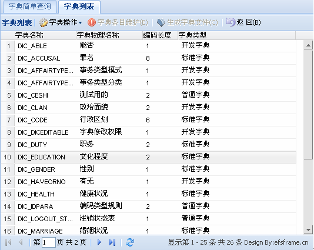
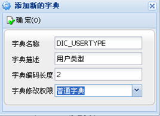
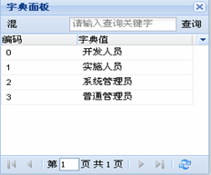
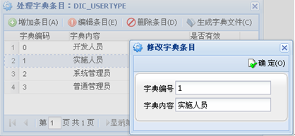

字典管理
字典管理：字典管理作为EfsFrame框架的亮点，开始不容易为人所理解，但是掌握后又能让人耳目一新。
这里说的字典是指我们在项目中经常用到的一些可枚举项的集合，表现的常规的Web上就是
下拉框，比如说：性别字典、学历字典、籍贯字典、是否字典、婚姻状态字典等，这些属性的内容都是可以枚举的项，所以我们统称他们为字典。
往往在不同的行业，不同的应用系统中，会有很多字典需要管理与维护，为了便于统一管理，我们将该管理放在了EfsFrame框架中，以后大家在业务开发过程中，可以轻松的将所有的字典项纳入到系统管理平台中，添加新的字典后，只要生成字典文件即可在页面调用。
在字典管理中的注意事项：
1、字典名称，我们一般以大写的DIC_ 开头，这是一种编码规范；
2、字典条目中的字典编码，一律要以数字表示，如：001、002等，便于页面的通过编码快速检索；
3、添加完成的字典，生成字典文件，会统一以UTF-8编码模式的XML文件存放在应用系统项目的dic目录下，以便页面调用；
4、生成的字典XML文件会自动完成字典条目描述的全拼、简拼的构造，方便页面在快速字典选择过程中，通过编码、简拼、全拼的方式来检索字典数据；
5、所有的字典信息，我们将在系统启动时，将其缓存到应用服务器内存中，在做各种字典翻译的时候，特别是在详细信息查询时，就不需要做关联查询，自动从内存中获得字典翻译内容，从而大大提升系统的运行效率；
图例展示：



